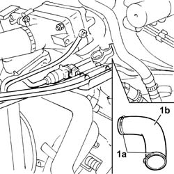
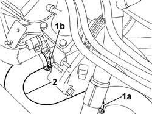
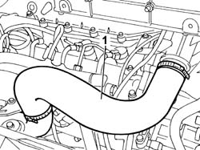
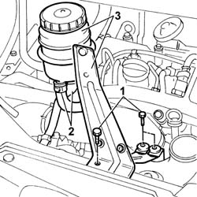
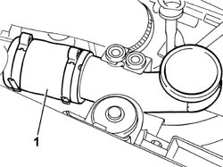
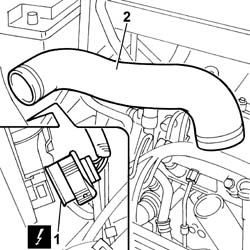
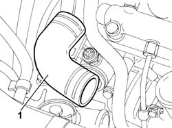

1088D18 HOSE BETWEEN RIGID PIPE AND THERMOSTAT - R.R.
- Path
- Procedures > 10 ENGINE UNIT > 1088 ENGINE COOLING > 1088D COOLANT HOSES AND SLEEVES > 1088D18 HOSE BETWEEN RIGID PIPE AND THERMOSTAT - R.R.
- Kind
- repair procedure (removal / refitting; the operation number is the code)
- Applies to
- engines: 2.0 JTD 8V, 2.3 JTD 16V, 2.8 JTD 8V; all production periods
- Interactive page
- https://sloeber94.github.io/elrnDB-fDct/en/#/244000958
Applies to: engines: 2.8 JTD 8V; all production periods
 Removing
Removing
 Refitting
RefittingSee in Op. 1048A21
- Position a suitable container for collecting the engine coolant.
1. Open the fastening bands (1a) and detach the hose (1b).

Applies to: engines: 2.8 JTD 8V; all production periods
Refitting
Removing- Fit the hose on the thermostat and on the rigid pipe and renew the fastenings using the bands.
See in Op. 1048A21
Applies to: engines: 2.0 JTD 8V; all production periods
Removing
Refitting- Position the vehicle on the lift.
Op. 7055B54 UNDER-ENGINE GUARD - R R
- Position a suitable container for collecting the coolant.
1. Disconnect the lower hose from the rigid pipe (1a) and from the thermostat (1b).
2. Remove the hose from the rigid pipe to the thermostat.

Applies to: engines: 2.0 JTD 8V; all production periods
Refitting
Removing- Fit the hose from the rigid pipe to the thermostat.
- Connect the hose to the rigid pipe and to the thermostat.
Applies to: engines: 2.3 JTD 16V; all production periods
Removing
Refitting- Position the vehicle on the lift.
Op. 7055B54 UNDER-ENGINE GUARD - R R
- Disconnect the lower radiator pipe.
- Lower the vehicle.
1. Remove the air delivery sleeve to the air - air heat exchanger (Intercooler).

Applies to: engines: 2.3 JTD 16V; all production periods
1. Undo the bolts securing the power steering reservoir bracket.
2. Disconnect the fluid pipes from the reservoir.
3. Remove the power steering reservoir complete with bracket.

Applies to: engines: 2.3 JTD 16V; all production periods
1. Remove the second section of the air delivery sleeve to the air - air heat exchanger (Intercooler).

Applies to: engines: 2.3 JTD 16V; all production periods
1. Disconnect the right front light cluster electrical connection.
 | Description | Connector |
|---|---|---|
1 | Right headlamp | F011 |
2. Disconnect the collars at both ends and remove the air pipe from the intercooler to the intake manifold.

Applies to: engines: 2.3 JTD 16V; all production periods
- move the injection wiring partly to one side if necessary.
1. Remove the sleeve sleeve and disconnect the collars securing the ends to the thermostat and rigid pipe.

Applies to: engines: 2.3 JTD 16V; all production periods
Refitting
Removing- Fit the sleeve connecting the thermostat to the rigid pipe.
- Fit the air pipe from the intercooler to the intake manifold and connect the collars to both ends.
- Connect the right front light cluster electrical connection.
| Description | Connector |
|---|---|---|
. | Right headlamp | F011 |
- Fit the second section of the air delivery sleeve to the air - air heat exchanger (Intercooler).
- Remove the power steering reservoir complete with bracket.
- Connect the fluid pipes to the reservoir and tighten the power steering fluid reservoir mount retaining bolts.
- Fit the air delivery sleeve to the air - air heat exchanger (Intercooler).
Op. 0010T20 COOLANT CHECK DENSITY AND TOP UP IF NECESSARY
Op. 0010T21 COOLANT CHECK DENSITY AND TOP UP IF NECESSARY
Op. 7055B54 UNDER-ENGINE GUARD - R R
- Remove the vehicle from the lift.